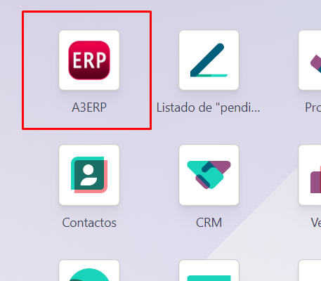
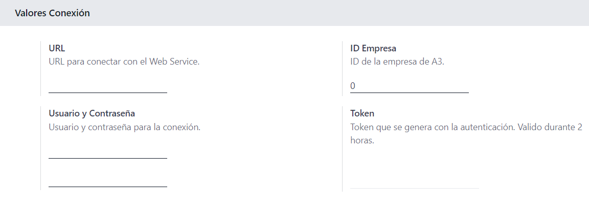

<!-- <section class="oe_container">
    <div class="oe_row">
        <h2 class="oe_slogan" style="color:#aa2934">Para acceder a las opciones de a3ERP tenemos el icono de la pantalla principal.</h2>
        <div class="oe_span12 oe_demo oe_picture oe_screenshot">
            
        </div>
    </div>
</section>

<section class="oe_container">
    <div class="oe_row oe_spaced">
        <h2 class="oe_slogan" style="color:#aa2934">Antes de poder trabajar con el conector es necesario configurar los parametros básicos y hacer una comprovación de Sesión.</h2>
        <h3 class="oe_slogan">
            <div style="font-size: 16px; text-align: center; color: #aa2934">
                <ul>1. URL de Conexión al Web Service</ul>
                <ul>2. Usuario</ul>
                <ul>3. Contraseña</ul>
                <ul>4. ID de la empresa en a3ERP</ul>
                <ul>5. El Token se genera automaticamente al hacer la conexión.</ul>
            </div>
        </h3>
        <div class="oe_span12 oe_demo oe_picture oe_screenshot">
            
        </div>
    </div>
</section> -->